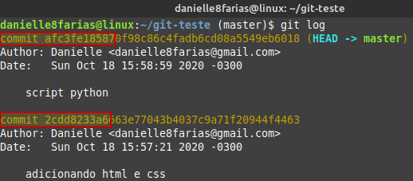
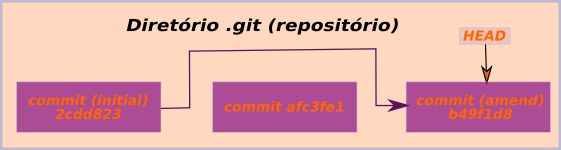
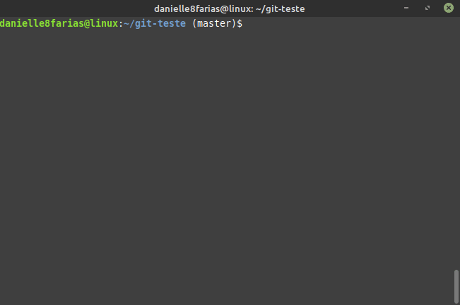
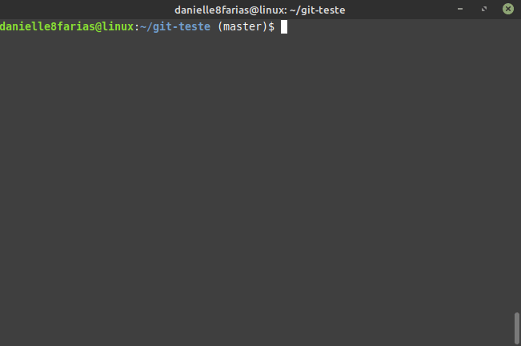

Mensagem de commit errada
Vamos supor que adicionei dois arquivos com os seguintes commits:
$ git add index.html estilo.css
$ git commit -m 'adicionando arquivo html e css'
- $ indica que você deve usar o usuário comum para fazer essa operação.
- add para adicionar arquivos ao index.
- commit> é quem vai levar os arquivos do index para o repositório git.
- m indica que você irá escrever uma mensagem para registrar o commit.
- a mensagem do commit vem entre aspas simples ou duplas.
E em seguida, adiciono mais outro, mas com o commit errado:
$ git add script.js
$ git commit -m 'script python'
Como é possível constatar, escrevi errado o commit desse arquivo.
Antes de consertá-lo, vamos dar uma olhada nos commit feitos até agora:
$ git log

Perceba que cada um tem sua própria chave (a sequência de caracteres com letras e números ao lado da palavra commit).
Vamos modificar o **último commit** com o seguinte comando:
$ git commit --amend -m 'adicionando script js'
Agora, vamos usar utilizar o comando git log para ver novamente os commits:
Observe que a chave do nosso último commit é diferente da anterior (antes da correção).
Para entender melhor o que aconteceu, vamos usar o comando $ git reflog
Com ele podemos verificar o nosso commit errado e a sua correção.
No fluxo do git, temos:
Arquivo esquecido
Outro problema que pode ocorrer, e que também é resolvido com o comando --amend, é de adicionar arquivos ao repositório, dar commit, mas ter faltado um arquivo que você queria que fizesse parte desse commit.
Exemplo:
No exemplo acima, esquecemos de adicionar o arquivo playstation.html.
Usando o comando git log, temos:
Fazendo a correção:

Usando git log novamente: